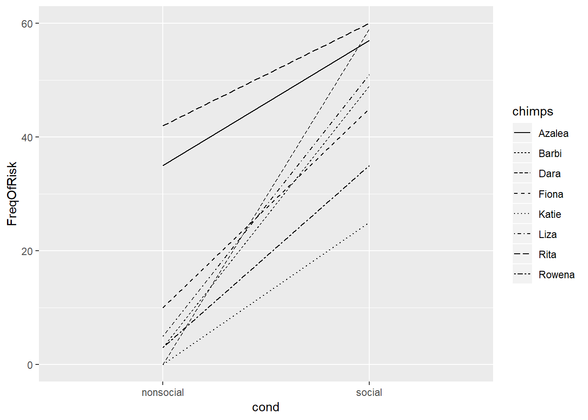
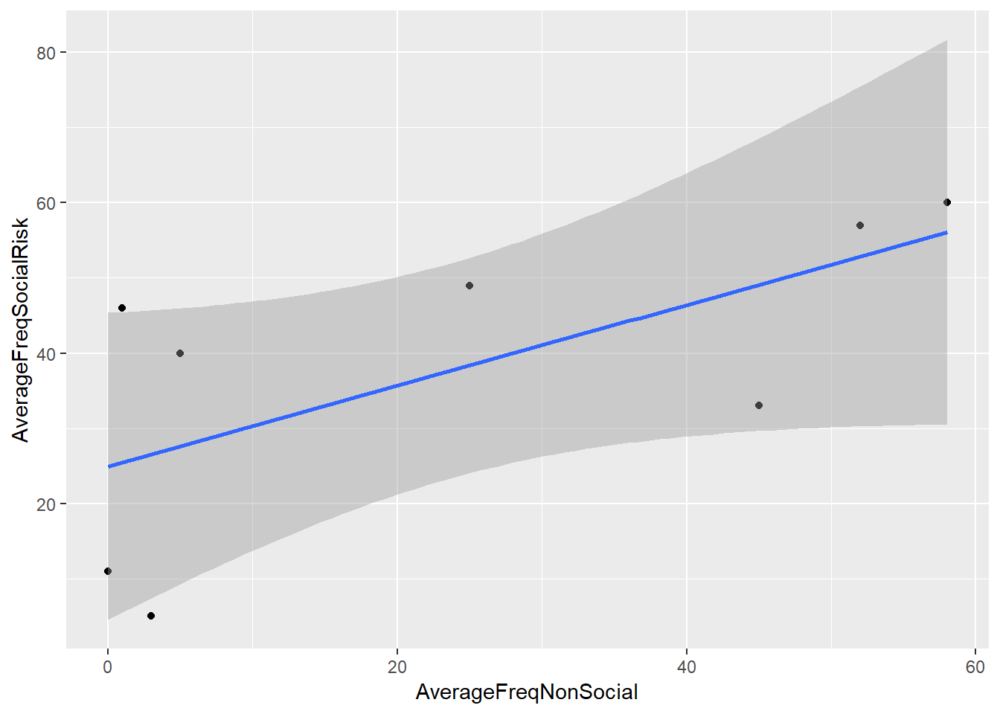
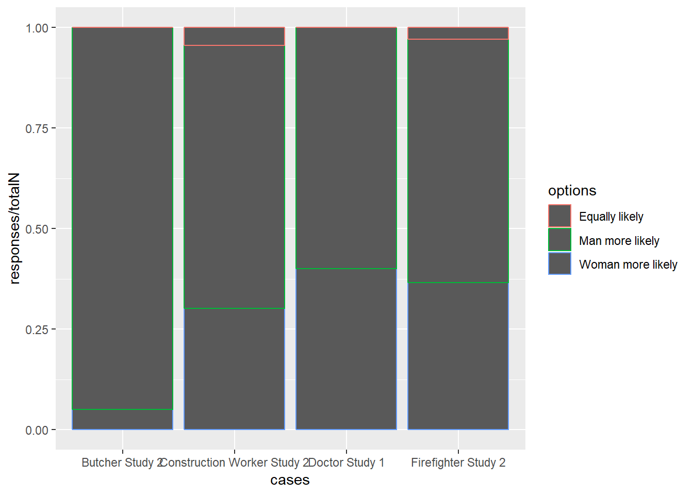
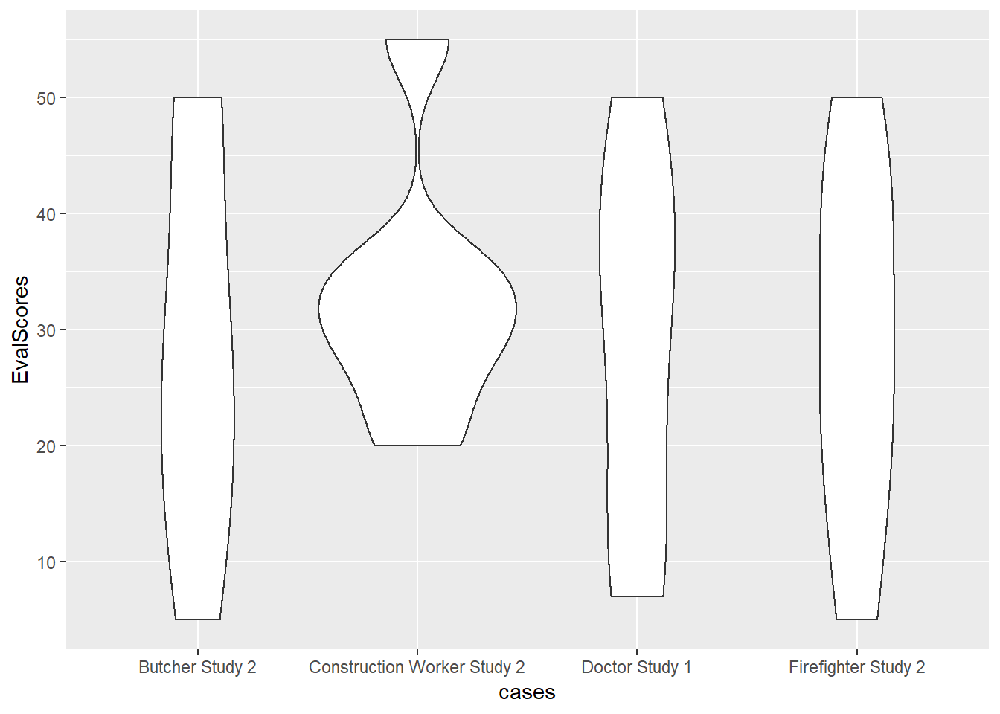
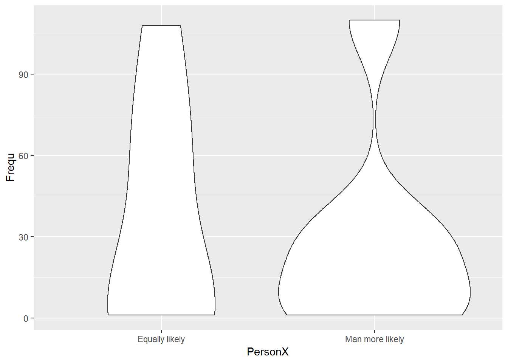
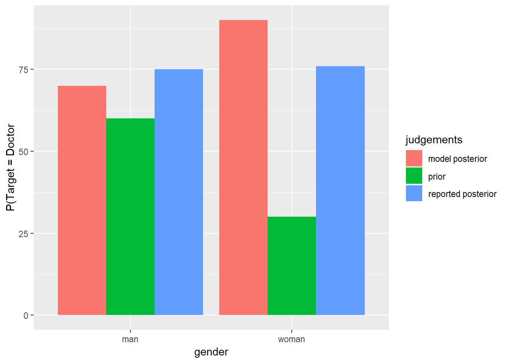
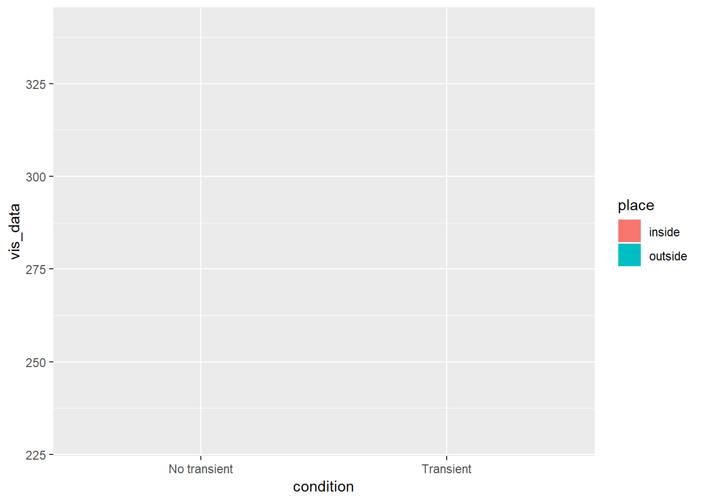
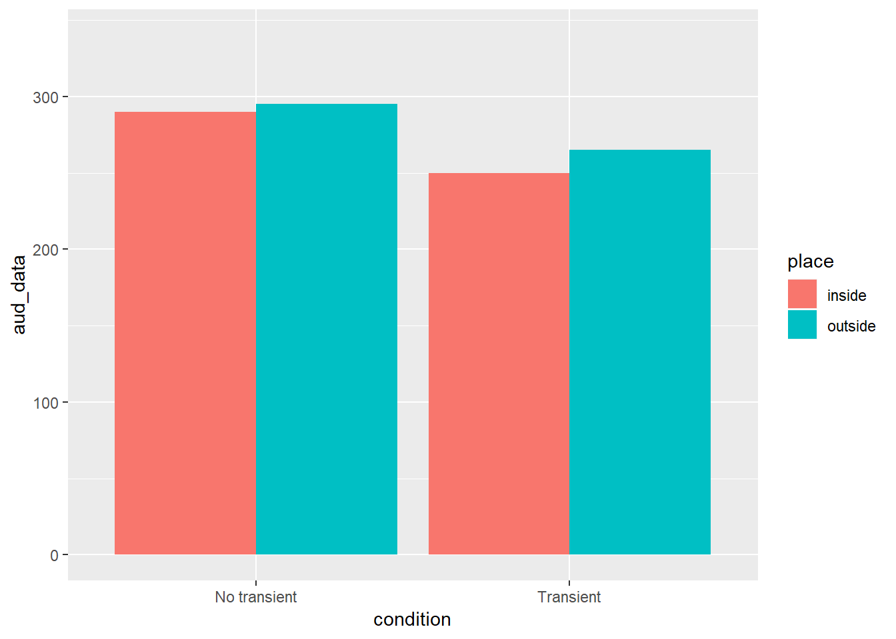
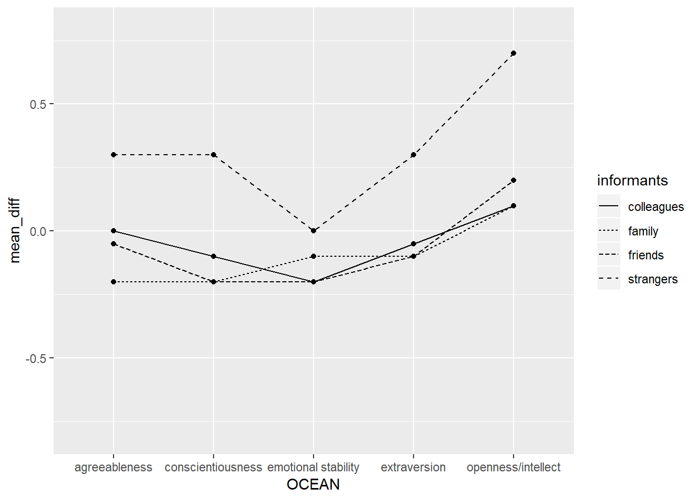

Data Vis Assignment
mhorger
March 11, 2019
Data-vis assignment
Graph 1
library(tidyverse)
chimps<- c("Dara", "Rita","Liza", "Azalea", "Barbi", "Rowena", "Katie", "Fiona")
cond<- c("social","social","social", "social", "social", "social", "social", "social", "nonsocial","nonsocial","nonsocial","nonsocial","nonsocial","nonsocial","nonsocial","nonsocial")
FreqOfRisk<- c(59, 60, 51, 57, 49, 35, 25, 45, 0, 42, 5, 35, 3, 3, 0, 10)
graph1<-data.frame(chimps, FreqOfRisk, cond)
print(graph1)## chimps FreqOfRisk cond
## 1 Dara 59 social
## 2 Rita 60 social
## 3 Liza 51 social
## 4 Azalea 57 social
## 5 Barbi 49 social
## 6 Rowena 35 social
## 7 Katie 25 social
## 8 Fiona 45 social
## 9 Dara 0 nonsocial
## 10 Rita 42 nonsocial
## 11 Liza 5 nonsocial
## 12 Azalea 35 nonsocial
## 13 Barbi 3 nonsocial
## 14 Rowena 3 nonsocial
## 15 Katie 0 nonsocial
## 16 Fiona 10 nonsocial#modified code
ggplot(data = graph1) +
geom_line (mapping = aes(x = cond,
y=FreqOfRisk,
group=chimps,
linetype=chimps) )
#Crump's code
ggplot(data = graph1, aes(x = cond,
y=FreqOfRisk,
group=chimps,
linetype=chimps))+
geom_line()### Graph 2
AverageFreqSocialRisk<- c(5, 11, 33, 40, 46, 49, 57, 60)
AverageFreqNonSocial<- c(3, 0, 45, 5, 1, 25, 52, 58)
graph2<- data.frame(AverageFreqNonSocial, AverageFreqSocialRisk)
ggplot(data = graph2)+
geom_point (mapping = (aes (x = AverageFreqNonSocial, y = AverageFreqSocialRisk)))+
geom_smooth(method='lm',mapping = (aes (x = AverageFreqNonSocial, y = AverageFreqSocialRisk)))
Cao, J., Kleiman-Weiner, M., & Banaji, M. R. (2019). People Make the Same Bayesian Judgment They Criticize in Others. Psychological Science, 30, 20–31.
Graph 3
cases<- c("Doctor Study 1", "Doctor Study 1", "Doctor Study 1", "Butcher Study 2","Butcher Study 2", "Butcher Study 2", "Firefighter Study 2","Firefighter Study 2", "Firefighter Study 2", "Construction Worker Study 2", "Construction Worker Study 2", "Construction Worker Study 2" )
options<- c("Woman more likely", "Equally likely", "Man more likely")
totalN<-c(199, 199, 199, 199, 199, 199, 200, 200, 200, 205, 205, 205)
responses<-c(0, 189, 10, 9, 130, 60, 0, 120, 80, 6, 124, 75 )
props<-c(responses/totalN)
graph3<- data.frame(cases, options, totalN, responses, props)
print(graph3)## cases options totalN responses
## 1 Doctor Study 1 Woman more likely 199 0
## 2 Doctor Study 1 Equally likely 199 189
## 3 Doctor Study 1 Man more likely 199 10
## 4 Butcher Study 2 Woman more likely 199 9
## 5 Butcher Study 2 Equally likely 199 130
## 6 Butcher Study 2 Man more likely 199 60
## 7 Firefighter Study 2 Woman more likely 200 0
## 8 Firefighter Study 2 Equally likely 200 120
## 9 Firefighter Study 2 Man more likely 200 80
## 10 Construction Worker Study 2 Woman more likely 205 6
## 11 Construction Worker Study 2 Equally likely 205 124
## 12 Construction Worker Study 2 Man more likely 205 75
## props
## 1 0.00000000
## 2 0.94974874
## 3 0.05025126
## 4 0.04522613
## 5 0.65326633
## 6 0.30150754
## 7 0.00000000
## 8 0.60000000
## 9 0.40000000
## 10 0.02926829
## 11 0.60487805
## 12 0.36585366ggplot(data = graph3) +
geom_bar(mapping = aes(x = cases, color = options, position = "fill", stat(responses / totalN)))
colors are wrong
Graph 4
evaluation<- c(1, 2, 3, 4, 5, 6, 7)
cases<- c("Doctor Study 1", "Doctor Study 1", "Doctor Study 1","Doctor Study 1", "Doctor Study 1", "Doctor Study 1", "Doctor Study 1", "Butcher Study 2","Butcher Study 2", "Butcher Study 2","Butcher Study 2","Butcher Study 2", "Butcher Study 2","Butcher Study 2", "Firefighter Study 2","Firefighter Study 2", "Firefighter Study 2","Firefighter Study 2","Firefighter Study 2", "Firefighter Study 2","Firefighter Study 2", "Construction Worker Study 2", "Construction Worker Study 2", "Construction Worker Study 2", "Construction Worker Study 2", "Construction Worker Study 2", "Construction Worker Study 2", "Construction Worker Study 2" )
EvalScores<- c(35, 50, 42, 35, 20, 10, 7, 19, 30, 50, 50, 30, 15, 5, 25, 25, 40, 50, 40, 15, 5, 25, 30, 30, 35, 55, 35, 20 )
graph4<-data.frame(evaluation, cases, EvalScores)
print(graph4)## evaluation cases EvalScores
## 1 1 Doctor Study 1 35
## 2 2 Doctor Study 1 50
## 3 3 Doctor Study 1 42
## 4 4 Doctor Study 1 35
## 5 5 Doctor Study 1 20
## 6 6 Doctor Study 1 10
## 7 7 Doctor Study 1 7
## 8 1 Butcher Study 2 19
## 9 2 Butcher Study 2 30
## 10 3 Butcher Study 2 50
## 11 4 Butcher Study 2 50
## 12 5 Butcher Study 2 30
## 13 6 Butcher Study 2 15
## 14 7 Butcher Study 2 5
## 15 1 Firefighter Study 2 25
## 16 2 Firefighter Study 2 25
## 17 3 Firefighter Study 2 40
## 18 4 Firefighter Study 2 50
## 19 5 Firefighter Study 2 40
## 20 6 Firefighter Study 2 15
## 21 7 Firefighter Study 2 5
## 22 1 Construction Worker Study 2 25
## 23 2 Construction Worker Study 2 30
## 24 3 Construction Worker Study 2 30
## 25 4 Construction Worker Study 2 35
## 26 5 Construction Worker Study 2 55
## 27 6 Construction Worker Study 2 35
## 28 7 Construction Worker Study 2 20p <- ggplot(graph4, aes(x=cases, y=EvalScores)) +
geom_violin()
p + stat_summary(fun.data=data_summary)## Error in layer(data = data, mapping = mapping, stat = StatSummary, geom = geom, : object 'data_summary' not foundp + stat_summary(fun.data="mean_sdl", mult=1,
geom="crossbar", width=0.2 )
p
Graph 5
PersonX<- c("Equally likely", "Man more likely")
MoneyTransferred<-c("$0.00","$0.00", "$0.05","$0.05", "$0.10","$0.10", "$0.15","$0.15", "$0.20", "$0.20", "$0.25", "$0.25", "$0.30", "$0.30")
Frequ<- c(5, 110, 2, 20, 70, 30, 108, 35, 55, 5, 1, 1, 1, 1)
graph5<-data.frame(PersonX, MoneyTransferred, Frequ)
a<- ggplot(graph5, aes(x=PersonX, y=Frequ)) +
geom_violin()
a + stat_summary(fun.data=data_summary)## Error in layer(data = data, mapping = mapping, stat = StatSummary, geom = geom, : object 'data_summary' not found stat_summary(fun.data="mean_sdl", mult=1,
geom="crossbar", width=0.2 )## geom_crossbar: na.rm = FALSE, width = 0.2
## stat_summary: fun.data = mean_sdl, fun.y = NULL, fun.ymax = NULL, fun.ymin = NULL, fun.args = list(), na.rm = FALSE
## position_identitya
b<- ggplot(data = graph5)+
geom_violin( mapping = aes(x=PersonX, y=Frequ, stats = )) Graph 6
What kind of data do I need to put in to do the log likelihood ratio?
Graph 7
library(tidyverse)
gender<- c("man", "woman")
judgements<-c("prior", "model posterior", "reported posterior")
values<- c(60, 90, 75, 30, 70, 76)
graph7<- data.frame(gender, judgements, values)
ggplot(graph7, aes(fill=judgements, y=values, x=gender)) +
geom_bar(position="dodge", stat="identity")+
labs( y = "P(Target = Doctor") 
Graph 8
Jefferies, L. N., & Lollo, V. D. (2019). Sudden Events Change Old Visual Objects Into New Ones: A Possible Role for Phasic Activation of Locus Coeruleus. Psychological Science, 30, 55–64.
Graph 9
condition<- c("No transient", "Transient")
place<-c("outside", "outside","inside", "inside")
all_data<-c(305, 292, 300, 280, 295, 265, 290, 250)
vis_data<-c(305, 292, 300, 280)
aud_data<-c(295, 265, 290, 250)
group<- c("visual","visual", "auditory", "auditory")
visual<-data.frame(condition, place, vis_data)
auditory<-data.frame(condition, place, aud_data)
graph9<-data.frame(visual, auditory)
ggplot(graph9, aes(fill=place, y=vis_data, x=condition)) +
geom_bar(position="dodge", stat="identity")+
ylim(230, 340)
ggplot(graph9, aes(fill=place, y=aud_data, x=condition)) +
geom_bar(position="dodge", stat="identity")+
expand_limits(y=c(230, 340))
Jouravlev, O., Schwartz, R., Ayyash, D., Mineroff, Z., Gibson, E., & Fedorenko, E. (2019). Tracking Colisteners’ Knowledge States During Language Comprehension. Psychological Science, 30, 3–19.
Graph 10
Kim, H., Domenico, S. I. D., & Connelly, B. S. (2019). Self–Other Agreement in Personality Reports: A Meta-Analytic Comparison of Self- and Informant-Report Means. Psychological Science, 30, 129–138.
Graph 11
OCEAN<- c("emotional stability", "extraversion", "openness/intellect", "agreeableness", "conscientiousness")
informants<-c("family","family","family","family","family", "friends","friends","friends","friends","friends", "colleagues","colleagues","colleagues","colleagues","colleagues", "strangers","strangers","strangers","strangers","strangers")
mean_diff<-c(-.10,-.10,.10,-.20,-.20, -.20, -.10, .20, -.05, -.20,-.20, -.05,.10, 0, -.10, 0, .30, .70, .30, .30)
graph11<-data.frame(OCEAN, informants, mean_diff)
print(graph11)## OCEAN informants mean_diff
## 1 emotional stability family -0.10
## 2 extraversion family -0.10
## 3 openness/intellect family 0.10
## 4 agreeableness family -0.20
## 5 conscientiousness family -0.20
## 6 emotional stability friends -0.20
## 7 extraversion friends -0.10
## 8 openness/intellect friends 0.20
## 9 agreeableness friends -0.05
## 10 conscientiousness friends -0.20
## 11 emotional stability colleagues -0.20
## 12 extraversion colleagues -0.05
## 13 openness/intellect colleagues 0.10
## 14 agreeableness colleagues 0.00
## 15 conscientiousness colleagues -0.10
## 16 emotional stability strangers 0.00
## 17 extraversion strangers 0.30
## 18 openness/intellect strangers 0.70
## 19 agreeableness strangers 0.30
## 20 conscientiousness strangers 0.30ggplot(graph11, aes(x=OCEAN, y=mean_diff, group=informants)) +
geom_line(aes(linetype=informants))+
geom_point()+
expand_limits(y=c(-.80, .80))